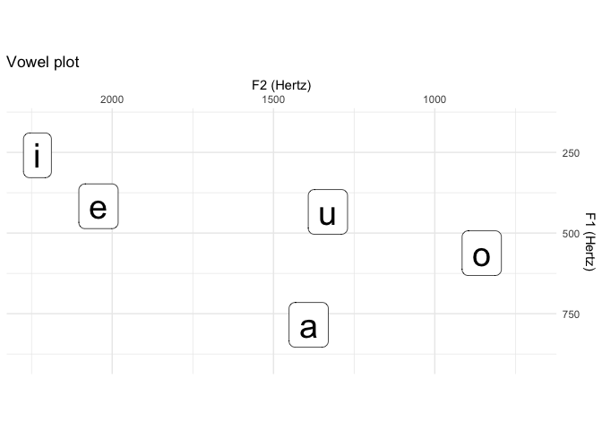
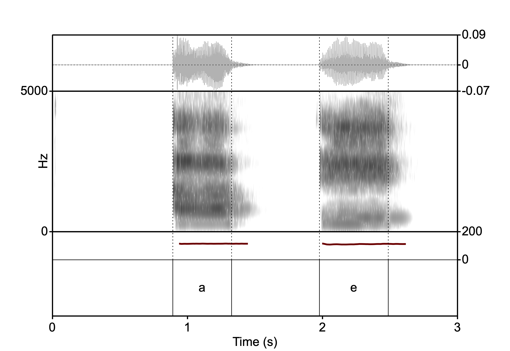

With speakr, you can run Praat scripts in R and capture their infoLine output.
Installation
You can install the released version of speakr from CRAN with:
install.packages("speakr")If you want to install a stable(ish) development version, use:
remotes::install_github("stefanocoretta/speakr@devel", build_vignettes = TRUE)Use
For a quick start, check out the vignette with:
vignette("run-praat", "speakr")On macOS, Linux and Windows, the path to praat is set automatically to the default installation path. If you have installed Praat in a different location, or if your operating system is not supported, you can set the path to Praat with option(speakr.praat.path).
For example:
option(speakr.praat.path = "./custom/praat.exe")You can either run this command every time you start a new R session, or you can add the command to your .Rprofile (recommended).
Example
Use prat_run() to run a Praat script, and capture = TRUE to capture the output of the write/appendInfoLine commands in the script. Everything is set in the Praat script as usual, so you don’t have to learn a new language to perform tasks you already know how to perform.
script <- system.file("extdata", "get-formants-args.praat", package = "speakr")
formants <- praat_run(script, "Hertz", 0.03, capture = TRUE) %>%
read_csv()Let’s check the tibble formants.
formants
#> # A tibble: 5 x 4
#> vowel F1 F2 F3
#> <chr> <dbl> <dbl> <dbl>
#> 1 a 784. 1391. 2433.
#> 2 e 417. 2042. 2424.
#> 3 i 259. 2232. 2819.
#> 4 o 562. 855. 2463.
#> 5 u 434. 1331. 2816.And let’s make a vowel plot.
formants %>%
ggplot(aes(F2, F1, label = vowel)) +
geom_label(size = 10) +
labs(
title = "Vowel plot",
x = "F2 (Hertz)",
y = "F1 (Hertz)"
) +
scale_x_reverse(position = "top", limits = c(2250, 700)) +
scale_y_reverse(position = "right", limits = c(900, 150)) +
coord_fixed()
Simple plotting utility
You can plot a sound file and TextGrid using Praat’s plotting facilities.
wav <- system.file("extdata", "vowels.wav", package = "speakr")
praat_plot("vowels.png", wav, f0 = T, f0_max = 200, end = 3)You can include the plot in an Rmarkdown file with knitr.
knitr::include_graphics("man/figures/vowels.png")